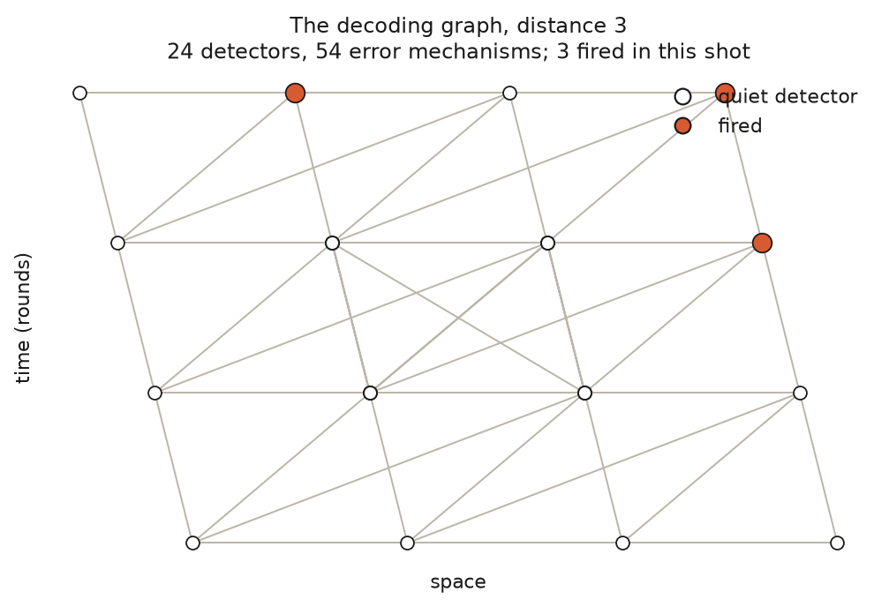
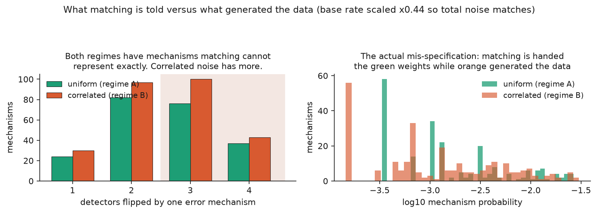

Machine learning applied to quantum computing.
Post 2 of 3 on neural decoders for the surface code. No results in this one either. This is the mechanism the experiment tests, and the one design decision that makes the test mean anything.
Post 1 ended on a claim I did not defend: that minimum-weight perfect matching is near-optimal, and that its strength and its weakness are the same property. This post defends it.
The syndrome tells you which parity checks fired. Matching turns that into a graph problem.
Every error mechanism that could occur (a qubit flipping, a measurement misreporting, a gate misfiring) flips some specific set of parity checks. For most mechanisms in the surface code that set has exactly two elements. So you can draw a graph where the nodes are parity checks and each edge is an error mechanism connecting the two checks it would flip.
Now the decoding problem has a clean shape. You observed some set of checks firing. Find the cheapest set of edges whose endpoints are exactly those checks. Each edge gets a weight from how likely that error is, roughly the negative log of its probability, so "cheapest" means "most likely explanation".
That is minimum-weight perfect matching, a classical combinatorial problem with exact
polynomial-time algorithms going back to Edmonds in 1965. pymatching solves it fast enough
to run in real time.

The real graph for a distance-3 code, drawn from the actual detector error model. Horizontal is space, vertical is time. Twenty-four detectors, fifty-four error mechanisms joining them. Three fired in this shot, and matching's job is to find the cheapest set of edges pairing exactly those three up with the boundary.
It is a genuinely elegant reduction, and it explains the numbers from post 1. At distance 5 and a physical error rate of 0.3 percent, matching takes the logical error rate from 15.4 percent down to 0.34 percent, a factor of 45.
I picked that configuration rather than the most flattering one on purpose. At a physical error rate of 0.1 percent the same comparison gives somewhere between 350x and 610x depending on the run, because matching makes only about twenty mistakes in two hundred thousand shots and the ratio swings on counting noise. A number that moves that much between runs is not a number to build an argument on.
The reduction is exact only if two things hold, and both are about the graph being a faithful picture of the physics.
The first is that every error flips exactly two checks. Errors that flip four have no single
edge to represent them. In practice stim decomposes such mechanisms into pairs of edges,
which is a good approximation when they are rare and a worse one when they are not.
The second is that you know the edge weights. The graph is built from a detector error model, which is a list of every error mechanism with its probability. Get those probabilities wrong and you are still solving a matching problem, just not the one in front of you.
Both assumptions hold comfortably in simulation, for the circular reason that in simulation you wrote the noise model yourself. Neither survives contact with hardware.

Left: how many detectors each error mechanism flips. Matching's graph holds the twos. Both regimes have mechanisms above two, which is worth saying plainly rather than implying this is unique to correlated noise: uniform has 113, correlated has 143.
Right: where the mismatch actually bites. The uniform model matching is handed assigns a handful of discrete probabilities, the tall green spikes. The correlated device spreads its mechanisms across orders of magnitude. Matching is solving the right combinatorial problem with the wrong weights, and the total amount of noise is identical between the two.
Three things break it.
Qubits are not identical. Error rates vary across a chip by an order of magnitude, driven by fabrication variation and by two-level-system defects that come and go. The "uniform physical error rate p" in every simulation paper is an average over a distribution.
Errors are not independent. Driving one qubit leaks microwave energy into its neighbours. That crosstalk produces genuinely correlated errors: two adjacent qubits flipping together, more often than chance. A correlated two-qubit error flips up to four checks at once, which is exactly the case the graph struggles to express.
And the device drifts. Calibration you performed this morning is stale by evening. Whatever detector error model you handed the decoder is a description of a machine that no longer quite exists.
So matching's optimality is conditional on a model, and on hardware the model is always somewhat wrong. A learned decoder is never given a model at all. It sees syndromes and outcomes, and picks up whatever structure the data actually contains, including correlations that have no edge to live on.
That is the bet. Now, how do you test it without fooling yourself?
Here is the obvious experiment, and it is wrong: simulate uniform noise, measure both decoders, then add crosstalk, measure again, and show the gap widened.
The problem is that adding crosstalk adds noise. The second experiment is harder than the first for every decoder, so of course the numbers move. You would have measured "more noise hurts", which nobody needed an experiment to learn, and dressed it up as "correlated noise favours learned decoders".
The fix is to hold the total amount of noise fixed and change only its shape.
Concretely: build the correlated circuit, then scale the base error rate down by bisection until the mean detection-event density matches the uniform circuit to within about two percent. The devices now fire their parity checks at the same rate. One of them just does it in a correlated pattern rather than an independent one.
The scale factors this produces are large, which tells you how much the naive version would have distorted things. At the strongest correlated setting the base rate has to drop to about 35 percent of its uniform value to keep total noise constant. Without that correction the "correlated" arm would have carried roughly three times the noise of the control.
Any movement in the results is now attributable to structure, because amount is pinned.
The comparison runs three ways on identical shots.
First, matching handed the true model: the detector error model of the circuit that actually generated the data, correlations and per-qubit rates included. This is the generous version and an upper bound on what matching can do. It is also unavailable on real hardware, since it presumes you characterised your noise perfectly.
Second, matching handed a mis-specified model. It gets the uniform model while the data comes from the correlated circuit. You calibrated, your calibration was wrong in the ordinary ways, and you decoded anyway. This is the realistic baseline and the one that matters if you intend to deploy anything.
Third, the neural decoder, given no model whatsoever. Only syndromes and labels.
Reporting only against the mis-specified version would be stacking the deck. Reporting only against the true-model version would be answering a question nobody faces. Both belong in the table, and the distance between them is itself a measurement: it is the cost of not knowing your own device.
Worth stating before seeing results, because a hypothesis you cannot lose is not a hypothesis.
If the mechanism is real, the gap between mis-specified matching and true-model matching should widen as correlation increases, and the learned decoder should track the true-model line rather than the mis-specified one.
If instead the two matching variants stay close together under correlated noise, then matching holds up under model error better than I claimed, and the argument for learned decoders loses most of its force. That is a real possibility and it would be the more interesting outcome to report.
If the learned decoder loses to both under every condition, then the training budget is inadequate or the architectures are wrong, and the experiment has not tested the hypothesis at all. Distinguishing that case from a genuine negative is why there is a separate budget-scaling measurement, which turns out to matter more than I expected.
Results in post 3.
Code and the full experimental setup:
github.com/Bauxitiego/qec-neural-decoder.
The noise calibration is in src/noise.py, the three-way comparison in src/regime_b.py.